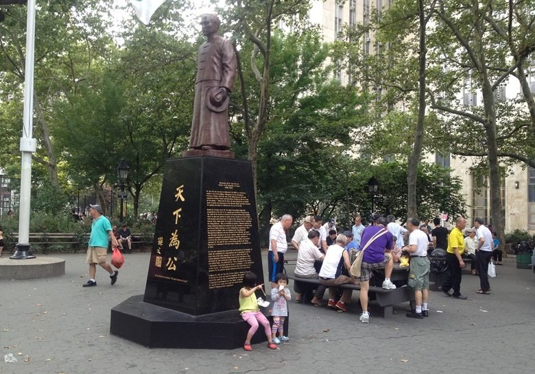

New York City is a city in the United States. It has a population of over nearly 9 million spread throughout five boroughs: Manhattan, Brooklyn, Queens, The Bronx, and Staten Island. It is considered a center of finance, technology, culture, and entertainment. It is host to the homes of some of the richest people in the world due to the Financial District, with investors and finance heads all centralized there. New York City also serves as a major tourist attraction, with some of the most visited landmarks in the world, like the museums, statues, bridges, and zoos. Here are three of my favorite spots in NYC.
| Name+Link | Address | Description | Picture |
|---|---|---|---|
| American Museum of Natural History | 200 Central Park West, New York, NY 10024 | A natural history museum at Central Park, exhibiting the existence of life throughout history, whether it be humans, animals, or dinosaurs. |  |
| Taipan Bakery | 194 Canal Street, New York,NY 10013 | A Chinese bakery in Chinatown serving an assortment of pastries, cakes, buns, and bread. | |
| Columbus Park | Mulberry Street &, Baxter St, New York, NY 10013 | A public park with volleyball courts, hoops, a playground, a soccer field, a statue of Sun Yat-sen, and more. It hosts the local Chinese community, serving as a gathering place. |  |
NYC has got its cons. First of all, it is impressively unsanitary, and has a variety of reasons for why it is this way. Everywhere you go, there will be trash on the sidewalk or street, dead animals here and there, and you can find both human and animal excreta if go around enough. Second of all, it is extremely expensive. You can spend a million and live in a carboard box in Manhattan. Everything is marked up. It'll all be expensive; food, drinks, entertainment, etc. Third, it feels dangerous. It's not just a feeling, but it is objectively dangerous. If you leave behind anything without security for a minute, it will get stolen. Even if it has a lock or something on it, if it's deemed valuable enough, it's not yours anymore. Also you can probably get mugged or beat up if you're in the wrong area. Fourth, the people. Ever since weed was legalized, I've second hand smoked enough to give me cancer and brain damage. People do not care about each other here, and hold no pity nor care for anyone but themselves.